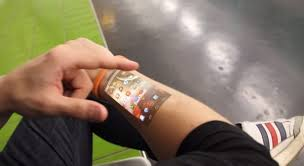
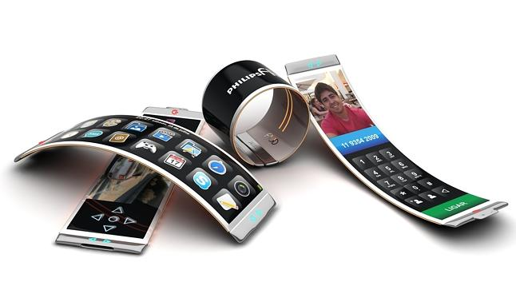

In the future, we could see a lot of changes in the smartphone industry. I will take a look at these expected changes in the article to follow.
The future of Smartphones
Augmented Reality Augmented Reality; can be defined as "A technology that superimposes a computer-generated image on a user's view of the real world, thus providing a composite view"
Things could become a lot more interesting in the world of smartphone games and apps!
Take this video for example, realistic-looking eh? That will most likely be all apps in the future! Using GPS, it can be used on the go! The only thing that's holding back smartphones going fully augmented is the fact that the technology for recognizing places, things or people must be of a certain standard. We expect this to only be a minor setback and we will see this on all smartphones very soon!
Holographic screens
Screens on our smartphones today are a far cry from how they started out and there are even some 3D screens around today but is that enough for us? No! Talks are, we may have 'Holographic phones' next! Have trouble getting your photos too look just right? With this phone, you could 'pull' or even 'twist' the photo in order to position it correctly! Pretty neat!
There may even me a type of 'wearable' holographic technology coming out so that you can have an even more portable experience with holographic tech!
Built-in Projector
If holographic phones aren't enough, now phones may be able to project at up to 50 inches! Have an all-important presentation to give? Use your phone! Have a game that needs to be more immersive on your phone? Project it! Heck, you can even watch a movie and it will look much more graphic! All you need is a flat surface! You don't even need a controller, just use your voice or body!
The only issues at the moment is the fact that the smaller the projector is, the harder it is to get light to reach it! And the battery on your phone would not be long draining out with the functionality but I expect there will be a way to minimize the damage soon!
Flexible Phones

This, to me, is by far the most interesting development in the technology of Smartphones. A phone that you can wear as a watch? Portable, easy to get to and seamless (it may seem) although I'm not so sure I'd enjoy the experience as my wrists are beyond tiny!
For people like me, the flexible screen would only work well if it resembled a phone only for the fact that it bends. It seems handy, being able to control it on your end while bending the screen back so you can show your friend pictures! Or, the fact that you can take a picture and it automatically displays the other side so your friend can see it! We sure have come a long way!
My thoughts on the Subject
Flexible phones? Feels kinda like its a functionality that doesn't need to be around. I mean, I'm not putting this invention down, it's pretty nifty but I feel as if there are a few more important things that need to be taken care of first.
These are just some of the many ideas that I feel need some attention first.
Agree? Disagree? Let me know below in the poll!
Written by Claire Finn
Please complete our poll:
Select your favourite Idea listed:
What's your favourite idea I brought to the fore?
Please rate this article: * ** *** **** *****